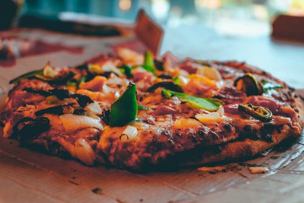
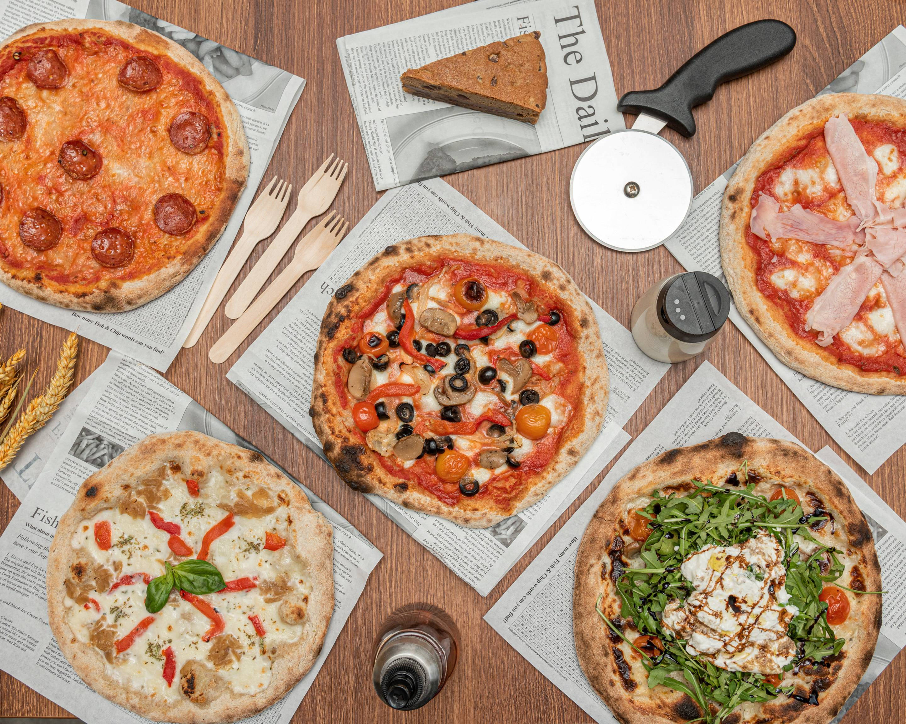
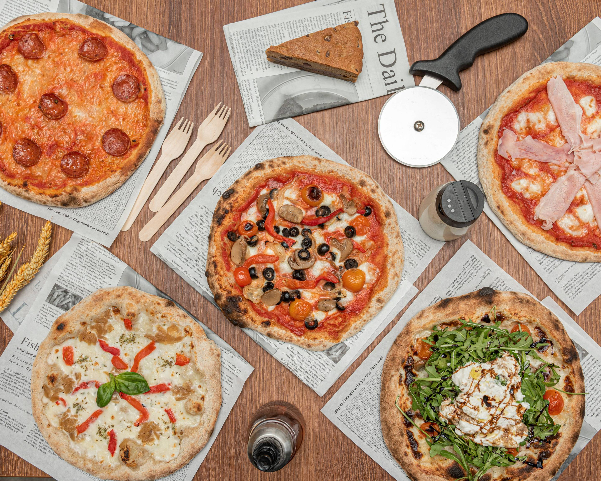

My Most Favourite Food
My most favourite food is "PIZZA".
I love pizza because pizza is very tasty,
and we have many topping options and the best thing about pizza is the
‘cheese’ everyone loves cheese.and the pizza is available for
both non-vegetarians and vegetarians, so we all can eat the pizza.
pizza is a popular food because we can choose the toppings as our choice.
pizza give flexibility to us to make our pizza as we want.
- 2 ½ cups warm water (600 mL)
- 1 teaspoon sugar
- 2 teaspoons active dry yeast
- 7 cups all-purpose flour (875 g), plus more for dusting
- 6 tablespoons extra virgin olive oil, plus more for greasing
- 1 ½ teaspoons kosher salt
- ¼ cup semolina flour (30 g)
OPTIONAL TOPPINGS
- TOMATO SAUCE
- 28 oz canned whole tomatoes (795 g)
- 1 tablespoon kosher salt
MARGHERITA
- “Bloom” the yeast by sprinkling the sugar and yeast in the warm water.
Let sit for 10 minutes,
until bubbles form on the surface.
- In a large bowl, combine the flour and salt.
Make a well in the middle and add the olive oil
and bloomed yeast mixture.Using a spoon,
mix until a shaggy dough begins to form.
- Once the flour is mostly hydrated, turn the dough out onto a
clean work surface and knead for 10-15 minutes.
The dough should be soft, smooth,
and bouncy. Form the dough into a taut round.
- Grease a clean, large bowl with olive oil and place the
dough inside, turning to coat with the oil.
Cover with plastic wrap.
Let rise for at least an hour, or up to 24 hours.
- Punch down the dough and turn it out onto a lightly
floured work surface. Knead for another minute or so,
then cut into 4 equal portions and shape into rounds.
Punch down the dough and turn it out onto a lightly
floured work surface. Knead for
another minute or so,
then cut into 4 equal portions and shape into rounds.
- Lightly flour the dough, then cover with a kitchen towel
and let rest for another 30 minutes
to an hour while you prepare the sauce and any other ingredients.

- Preheat the oven as high as your oven will allow,
between 450-500˚F (230-260˚C). Place a pizza stone, heavy baking sheet
(turn upside down so the surface is flat), or
cast iron skillet in the oven. 🔥
- Meanwhile, make the tomato sauce:
Add the salt to the can of tomatoes
and puree with an immersion blender,
or transfer to a blender or food processor,
and puree until smooth.🍅
- Once the dough has rested, take a portion and start by poking
the surface
with your fingertips, until bubbles form and do not deflate.
- Then, stretch and press the dough into a thin round.
Make it thinner than you
think it should be, as it will slightly shrink and
puff up during baking.
- Sprinkle semolina onto an upside down baking sheet and place
the stretched crust onto it. Add the sauce and
ingredients of your choice.
- Slide the pizza onto the preheated pizza stone or pan.
Bake for 15 minutes, or until the crust
and cheese are golden brown.🍕
- Add any garnish of your preference.🤤
- Nutrition Calories: 1691 Fat: 65 grams Carbs:
211 grams Fiber: 12 grams Sugars: 60 grams Protein: 65 grams
- Enjoy!❤️
After making pizza, it looks like a round shape.
It taste chewy and crisp,
with marinara sauce and cheese.
However you mostly taste the marinara and
the crispy chewiness of the dough then the cheese.
Its all about the textures combining with the flavour
of the sauce to give you a umami effect.
Each ingredient on its own has its delicious stomach growling smell.
The faint meaty smell of Bacon, dominoes unique dough cooked through
smells like a bakery, the gooey creamy smell of
cheese, and the zesty smell of pepperoni.
All together the smell is appealing.


 
